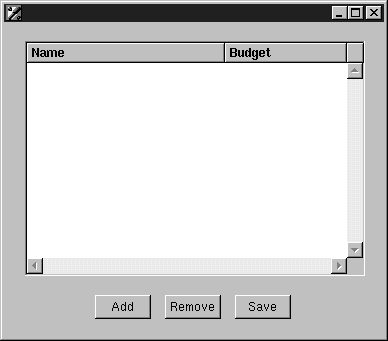
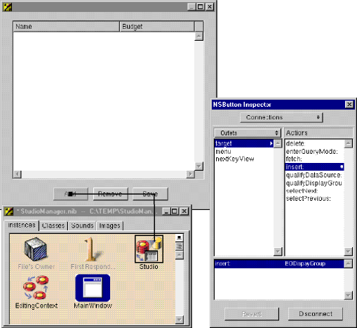

Creating a Java Client WebObjects Application
You can add basic behavior to your application, such as giving it the ability to add, delete, and save objects, without writing a line of code. This is possible because the EODisplayGroup, EOEditingContext, and EOInterfaceController objects in Interface Builder have predefined action methods that you can use to trigger operations in your application. An action method is a method that's invoked when the user clicks a button or another control object.
Add three buttons to your window and label them "Add," "Remove," and "Save."
These buttons will be used to insert new studios, delete existing studios, and save changes.
Control-drag from the Add button to the Studio EODisplayGroup.In the Inspector, select Outlets from the pop-up list at the top of the left column.
Select target in the left column.
Double-click insert: in the right column.
Using the same process, connect the Remove button to the delete: method.
To connect the Save button, control-drag from the button to the File's Owner object in the nib file window.
The File's Owner icon represents the object that "owns" the nib file, or the nib file's root object. In a Java Client WebObjects application, this object is an instance of a custom subclass of EOInterfaceController that is automatically created for you (StudioManager.java , in this case). EOInterfaceController defines the save method and implements it to commit changes to the database.
Note: The EOEditingContext object in the nib file ("EditingContext") also defines a method--saveChanges --that also commits changes to the database. However, EOInterfaceController's method is preferable because it catches exceptions that might arise from this operation.
© 1999 Apple Computer, Inc.